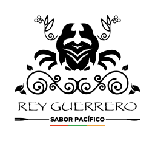

Estamos cocinando algo
pa' dejarte con la
boca abierta
El menú digital del Pacífico colombiano más sabroso está tomando forma. Mientras tanto, nos encontrás en Instagram o escribinos directo por WhatsApp.